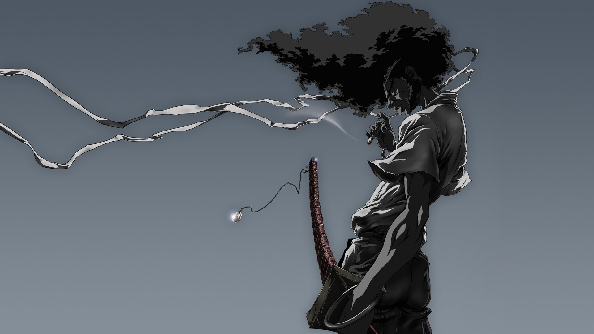

Entrenados desde los 10 años o incluso antes en habilidades marciales, los samuráis montaban y luchaban a caballo a principios del periodo medieval, utilizando principalmente un arco, pero también una espada larga curva cuando era necesario. Tenían una segunda espada más corta, y un decreto del gobernante Hideyoshi en 1588 establecía que solo los samuráis de pleno derecho podían llevar dos espadas, lo que se convirtió en un importante símbolo de estatus. Los samuráis también aprendían artes marciales, de las que había 18 en el periodo Edo, pero las habilidades más preciadas de los samuráis eran siempre la equitación, el tiro con arco y, después, el manejo de la espada. A partir del siglo XVII, la espada sustituyó al arco como arma samurái por excelencia (en gran parte gracias a que el arco era mucho más barato y accesible para los soldados de a pie), por lo que la espada, más exclusiva, pasó a ser conocida como el "alma del samurái". Ambas armas se ajustaban al ideal samurái de que la batalla debía consistir en duelos personales.
